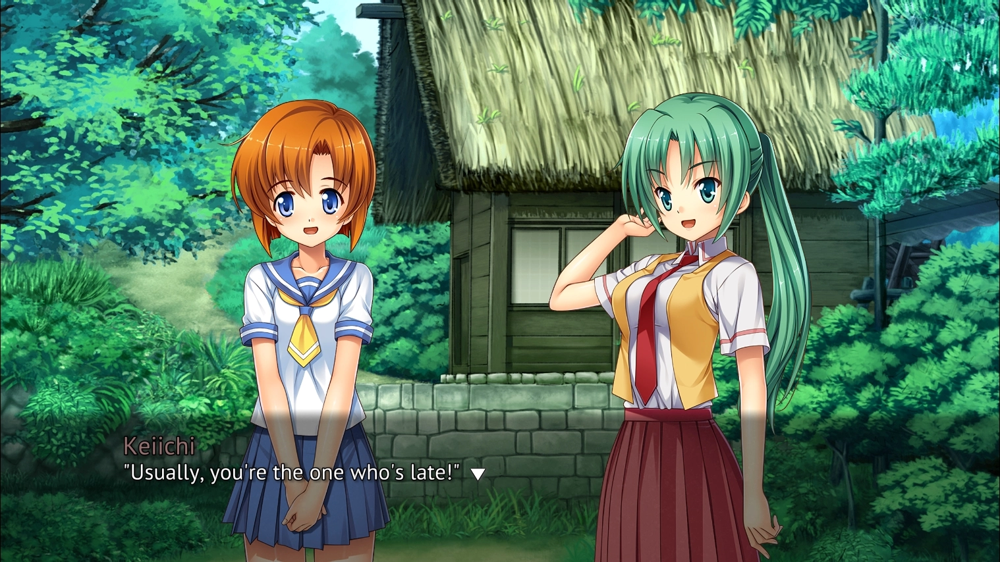
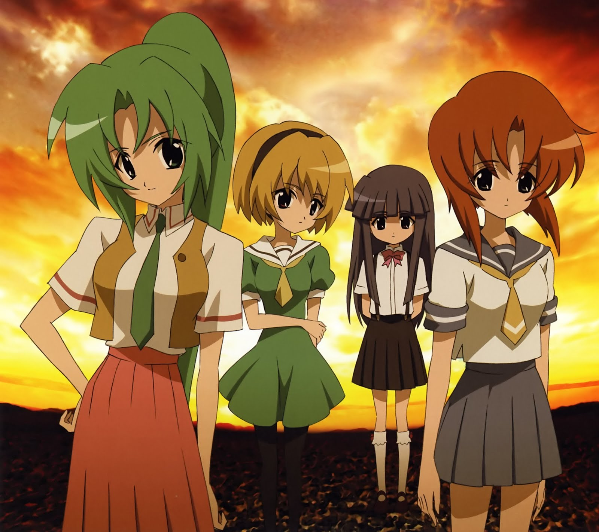
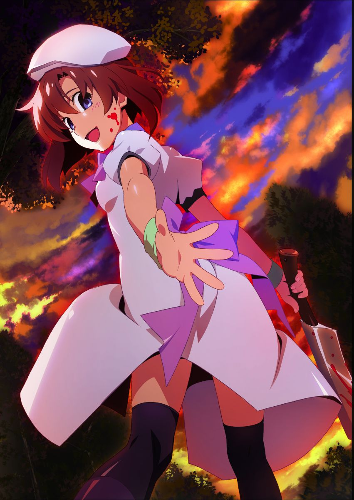

Higurashi series history
While these eight games make up the main series, several bonus chapters are available, including "Rei" (a fandisc collection of three sidestories that take place after the main plot) and a fourth, anime-only installment, "Kira" (a series of light hearted fanservice OVAs that are outside of continuity). There are also several short, manga-only arcs, usually placed before or after the main story and introducing new characters, while retaining the typical atmosphere of the series. These arcs were adapted with some new ones for the Nintendo DS under the title Higurashi no Naku Koro ni Kizuna (2008).
The sound novels also had an updated re-release for PlayStation 2 named Matsuri (2007), with the original final arc (Matsuribayashi-hen) left out and replaced by an alternate ending (Miotsukushi-hen), as well as two additional arcs. The ports turn the games into bona-fide Visual Novels with choices and routes rather than independent successive arcs like the original version. Later ports to other consoles added even more extra material.
An anime adaptation by Studio DEEN aired in 2006, with a continuation, entitled Higurashi no Naku Koro ni Kai, airing in 2007 and covering the last two arcs. A sequel anime by Studio Passione titled Higurashi no Naku Koro ni Gou premiered in October 2020, and a second sequel, Higurashi no Naku Koro ni Sotsu premiered in July 2021; they partly serve as a thematic link between Higurashi and the second "When They Cry" series, Umineko.
Two Live-Action Adaptations were made, titled Higurashi no Naku Koro ni (2008) and Higurashi no Naku Koro ni Chikai (2009), which adapt the first and sixth novel, respectively. An OVA called Higurashi no Naku Koro ni Kaku: Outbreak, based on Ryukishi07's short story, was released in 2013.
A sequel series, Higurashi no Naku Koro ni Rei, was introduced shortly after the end of Gou/Sotsu. Taking place in the Reiwa era some thirty years after the events of the original series, the story now focuses on the children of our protagonists as Keiichi's son Keitarou returns to Hinamizawa after five years.
While the eight core games were translated by MangaGamer in 2009, the translation was largely considered rather poor. However, starting in 2015, the entire series (including the eight main games, the three Rei games, and the three Hou games) will be given a Western release, with updated sprites and a re-translation, from the same company under the title Higurashi When They Cry Hou. The eight main games have been released and can be purchased from Steam or GOG.com.
In September 2020, a smartphone game with gacha elements and featuring a "sequel" story to the original visual novel, Higurashi no Naku Koro ni Mei was released to tie-in with the premiere of Gou.